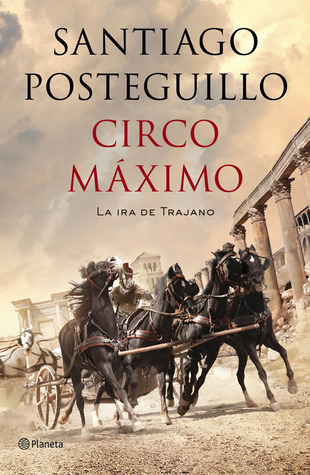

Circo Máximo: La ira de Trajano (Trajano, #2)
Reseña por Jorge I. Zuluaga

Ver reseña en GoodReads (necesita cuenta)
Lo que más me sorprende de Posteguillo es su capacidad para usar en cada novela recursos literarios muy diferentes. Con "Circo Máximo" ya llevo 4 de las "novelas romanas" de Posteguillo y voy por las otras 4 que me faltan (el final de esta trilogía de Trajano y las 3 de la trilogía de Escipion Africanus) y todas me han parecido diferentes.
Mientras que en el primer libro de está trilogía, los "Asesinos del Emperador" (lea aquí mi reseña; que sigue siendo para mí la más "emocionante" novela histórica que he leído), Posteguillo se vale del método de contar parte del final al principio de la novela y después retomar la historia décadas antes, o en "Julia Reto a los dioses" (lea aquí mi reseña) recurre a una narración entre la fantasía del mundo de los dioses y el mundo de los muertos, combinada magistralmente con el mundo real, en "Circo máximo" apela a muchas historias paralelas contadas de forma simultánea. Ejemplo de esta figura son los primeros y los últimos capítulos de esta novela, que se suceden como un "tejido" de historias paralelas, cuál más emocionante que otra, de modo que te impiden despegarte del texto. Sencillamente ¡magistral!
Los primeros capítulos de la novela, en los que se alterna la descripción pormenorizada de una carrera de caballos en el Circo Máximo (de allí el título de la novela) y las historias de los personajes centrales de la novela, son otro ejemplo maravilloso de este recurso literario que no había visto antes en otras novelas (tampoco soy un basto conocedor de la literatura de modo que me disculpan si el recurso ha sido más utilizado de lo que creo).
"Circo Máximo" transcurre en tan solo 7 años de la historia del Imperio Romano (entre el 100 y el 107 e.c.), los primeros del muy recordado imperium del divino Marco Ulpio Trajano, sobre cuya vida discurre esta novela y por supuesto la trilogía completa. Contrasta este corto período de tiempo con los casi 40 años en los que se desarrolla "Los asesinos del Emperador". A pesar del relativamente corto intervalo, esta segunda parte de la trilogía esta casi tan cargada de hilos argumentales y dramáticos como la primera; la razón es que transcurre durante el importante (y emocionante) período del imperio en el que se desarrollaron las guerras contra los pueblos al norte del Danubio, en especial contra los Dacios y su temerario rey Decébalo (más información ya arruinaría las sorpresas).
Si bien "Circo Máximo" no tiene tanta acción por página como "Los asesinos del emperador" (aunque tampoco le falta), al menos para mí ha sido una verdadera lección sobre la vida de la Roma del primer siglo de nuestra era: las tradiciones y costumbres, la vida cotidiana, la política, el derecho y las leyes, la vida y las jerarquías dentro del ejercito romano, la religión, las supersticiones, los espectáculos públicos (¡quede prendado por las increíbles carrera de Aurigas!), entre muchos otros.
Hace poco empecé a leer un libro sobre los romanos y encontré que muchas de las cosas sobre las que trataba ese libro en un tono más bien académico, están tan bien contadas en esta novela, que me he convencido de que no hay mejor manera de aprender sobre Roma que leyendo esta y las otras novelas de las sagas de Posteguillo (y por supuestos la de muchos otros autores que han escrito historias de ficción alrededor de la Roma de verdad).
No pude dejar de sentir una admiración y atracción especial hacia el Trajano que construye Posteguillo en esta novela. Solo he sentido una admiración similar por un personaje literario, ese sí ficticio: el Conde de Montecristo. Si bien el emperador Trajano fue admirado en vida y después de ella por sus cualidades como "gobernante" y "militar" lograr traerlo a la vida de la forma en la que lo hace Posteguillo y crear en los lectores un sentimiento similar al que seguro produjo el verdadero emperador en su tiempo, es para mí otro de los logros magistrales de este autor.
En muchos pasajes me sentí "disfrutando" (¡si! ¡disfrutando!) de una verdadera "novela". Pero no en el sentido literario, sino en sentido "televisivo". Una novela (o "soap operas" como la llaman los gringos) mexicana, venezolana o colombiana: romances imposibles, hijos adoptados que descubren tardíamente quiénes son sus padres, héroes que dan su vida por otros más débiles, padres que se sacrifican por sus hijos, parejas que se traicionan con amigos o familiares cercanos, etc. Por supuesto todas ellas historias muy romanas, pero Posteguillo logra poner ese tono dramático tan común en las novelas de la televisión que hemos disfrutado en latinoamerica. No sé si lo hace a propósito pero como buen aficionado a las novelas de televisión, doy fe que logra el mismo efecto.
No me cansaré de repetirlo en cada reseña: ¡lean a Posteguillo!